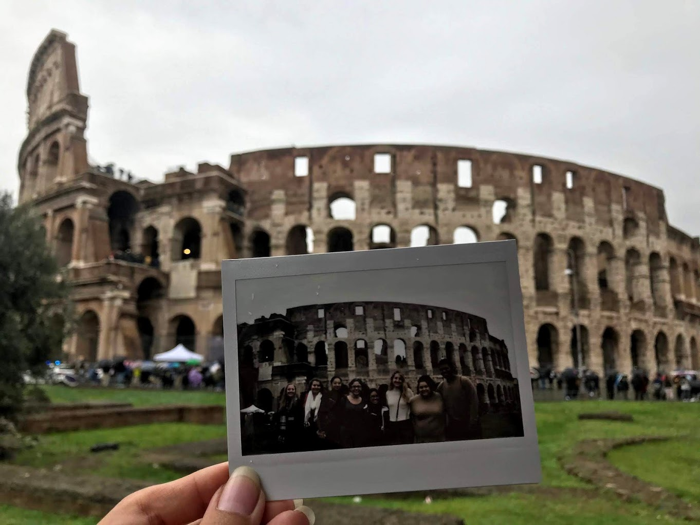
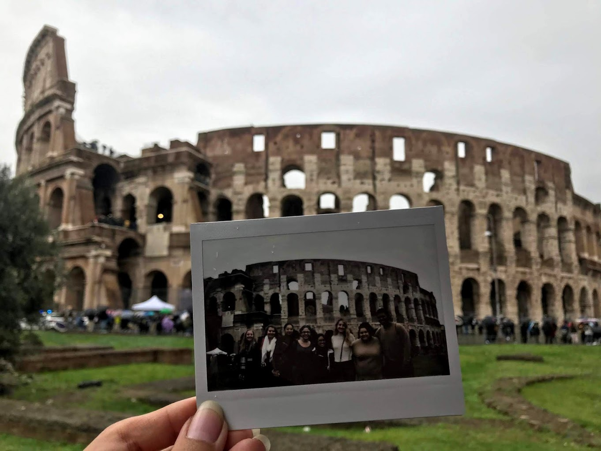
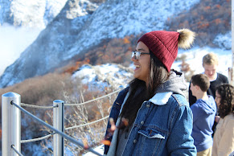

When asked what my favorite thing about studying abroad in Madrid, Spain was, I think back to our many walking tours across the city as a part of the program the school did to incentivize us to explore. One of my favorite things about exploring Madrid and other parts of Spain was my ability to walk through history. Walking through the Plaza del Dos de Mayo made me realize history was no longer just something I read about in textbooks or lectured on in class; it was something I was observing for myself. Plaza del Dos de Mayo marked the commencement of the Spanish War of Independence. In my Understanding 20th Century Spain class, we talked about the beginning of the war and where it happened. Therefore, I could make connections between what I was learning and the places I was going, which was amazing... Click here to read more!
Being a member of a marginalized community in the United States is a unique experience. I am Latinx, specifically Mexican American. It comes with its joys and challenges, a culture built up by adversity and strength, dancing, good food, good music, and overall pride. However, it also comes with the anguish of never feeling you belong, microaggressions, stereotypes, expectations so below you that you start to wonder why anyone ever set them. As a low-income individual, the intersectionality of these systemic inequalities tends to hit me all at once. Therefore, when I received the letter that I had been accepted to an already Predominantly White Institution, Syracuse University, and their Discover Program for a first-year semester abroad in Madrid, Spain, I was both elated as well as terrified. The Euro was worth more than the dollar: How would I afford anything? I had participated in Syracuse University's Summer Start Program, a program for students funded by Student Support Services and Higher Education Opportunity Program. These are opportunity programs, and Summer Start provided low-income first-generation students to get an inside scoop at college before the arrival of other students. After returning from Summer Start, I thought about how no one from that program was coming with me abroad. That year, I was the only student from SummerStart to go abroad for Discovery. I remember feeling anxiety at the thought of being around primarily White and higher-income individuals.